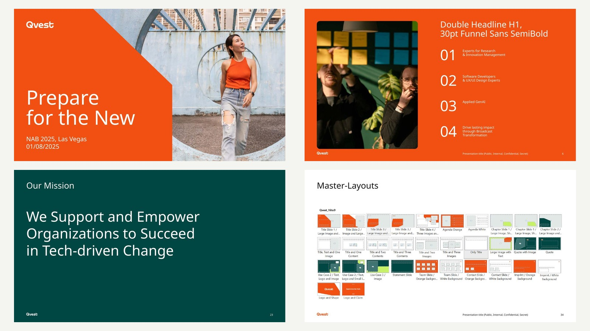

Challenge
A new corporate design had been developed by an external design agency. The next challenge was to make it work in everyday communication across QVEST — across different channels, formats and business-specific use cases.
QVEST
Implementing an externally developed corporate design across QVEST’s communication ecosystem — from presentation systems and everyday brand applications to a scalable illustration language for company-specific use cases.

Challenge
A new corporate design had been developed by an external design agency. The next challenge was to make it work in everyday communication across QVEST — across different channels, formats and business-specific use cases.
My role
Working on the client side as a Creative Consultant, I supported the implementation and further development of the new visual identity. My role was to translate the design language into practical applications across the organisation and to extend the system where QVEST’s specific communication needs went beyond the original framework.
Approach
The new corporate design was translated into practical communication tools across different channels and formats. This included presentation and information-design principles for everyday business communication, as well as a dedicated illustration language for company-specific topics such as Applied AI, control-room communication and change management.
Outcome
The result was a more usable and comprehensive visual system: presentation templates, repeatable information-design patterns and a flexible illustration language that helped internal teams apply the new identity consistently across real-world business communication.
Key capabilities
The rollout translated the new corporate design into practical applications for digital communication and recurring brand content.


Presentation templates and information-design principles turned the new identity into a repeatable working system for content, data, references and internal or client-facing communication.

A flexible visual language extended the corporate design into company-specific themes — making technology, transformation and operational topics easier to communicate without leaving the brand system.
Next project
MINI